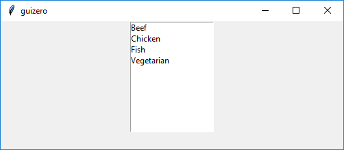

ListBox
__init__(
self,
master,
items=None,
selected=None,
command=None,
grid=None,
align=None,
visible=True,
enabled=None,
multiselect=False,
scrollbar=False,
width=None,
height=None)
What is it?
The ListBox object displays a list of items from which either single or multiple items can be selected.

How do I make one?
Create a ListBox object like this:
from guizero import App, ListBox
app = App()
listbox = ListBox(app, items=["Beef", "Chicken", "Fish", "Vegetarian"])
app.display()
Starting parameters
When you create a ListBox object you must specify master and you can specify any of the optional parameters. Specify parameters in the brackets, like this: listbox = ListBox(app, items=["Beef", "Chicken", "Fish", "Vegetarian"])
If you want the ListBox to allow multiple items to be selected you must set the multiselect optional parameter to True: listbox = ListBox(app, multiselect=True)
| Parameter | Takes | Default | Compulsory | Description |
|---|---|---|---|---|
| master | App, Window or Box | - | Yes | The container to which this widget belongs |
| selected | string or List | None | No | The item or items to select by default |
| items | List | - | Yes | A list of items to display |
| align | string | None | - | Alignment of this widget within its container. Possible values: "top", "bottom", "left", "right". |
| command | function name | None | - | The name of a function to call when a different option is selected. This function MUST take either zero or one argument, if the function takes one argument the current value of the ListBox will be given. |
| grid | List [int, int] | None | - | [x,y] coordinates of this widget. This parameter is only required if the master object has a grid layout. |
| visible | boolean | True | No | If the widget should be visible. |
| enabled | boolean | None | No | If the widget should be enabled. If None (the default) the enabled property will be inherited from the master |
| multiselect | boolean | False | No | If the widget should allow multiple items to be selected. |
| scrollbar | boolean | False | No | If the widget should have a verticle scrollbar. |
| width | size | None | No | Set the width of the widget in pixels or to "fill" |
| height | size | None | No | Set the height of the widget in pixels or to "fill" |
Methods
You can call the following methods on a ListBox object.
| Method | Takes | Returns | Description |
|---|---|---|---|
| after(time, command, args=None) | time (int), command (function name), args (list of arguments) | - | Schedules a single call to command after time milliseconds. (To repeatedly call the same command, use repeat()) |
| append(item) | item (string) | - | Appends a new item to the end of the ListBox. |
| cancel(command) | command (function name) | - | Cancels a scheduled call to command |
| clear() | - | - | Clears all the items in a ListBox |
| destroy() | - | - | Destroys the widget |
| disable() | - | - | Disables the widget so that it is "greyed out" and cannot be interacted with |
| enable() | - | - | Enables the widget |
| focus() | - | - | Gives focus to the widget |
| hide() | - | - | Hides the widget from view. This method will unpack the widget from the layout manager. |
| insert(index, item) | index (int), item (string) | - | Insert a new item in the ListBox at index |
| remove(item) | item (string) | Boolean | Removes the first item from the ListBox. Returns True if an item was removed. |
| repeat(time, command, args=None) | time (int), command (function name), args (list of arguments) | - | Repeats command every time milliseconds. This is useful for scheduling a function to be regularly called, for example updating a value read from a sensor. |
| resize(width, height) | width (int), height (int) | - | Sets the width and height of the widget |
| show() | - | - | Displays the widget if it was previously hidden |
| update_command(command) | command (function name) | - | Updates the function to call when a different option is selected. |
Properties
You can set and get the following properties:
| Method | Data type | Description |
|---|---|---|
| align | string | The alignment of this widget within its container |
| bg | color | The background colour of the widget |
| children | List | A list of the widgets in this container. [ListBoxWidget, ListBoxScrollbar] |
| enabled | boolean | True if the widget is enabled |
| font | string | The font of the text |
| grid | List | [x,y] coordinates of this widget. This parameter is only required if the master object has a grid |
| height | size | Set the height of the widget in pixels or to "fill" |
| items | List | Returns a list of items in the ListBox |
| master | App or Box | The container to which this widget belongs |
| value | string | Sets or returns the items selected in a ListBox. Returns None if 0 items are selected. If the ListBox is a not multiselect, value is the item selected, if the ListBox is a multiselect, value is a list of items selected. |
| visible | boolean | If this widget is visible |
| width | size | Set the width of the widget in pixels or to "fill" |
| text_size | int | The size of the text |
| text_color | color | The colour of the text |
| tk | tkinter.Frame | The internal tkinter object, see Using tkinter |
Refer to a property as <name of widget>.property. For example, if your ListBox object is called listbox you would write listbox.value.
You can set the property (for example listbox.value = "Chicken") or get the value of the property to use (for example print(listbox.value)).
Examples
** Select a text color from a ListBox **
When an item in the ListBox is selected a function will be called to change the color of the text.
from guizero import App, ListBox, Text
def change_color(value):
t.text_color = value
a = App()
t = Text(a, text="Its a ListBox", color="black")
listbox = ListBox(
a,
items=["red", "green", "blue", "yellow", "purple", "turquoise", "pink", "orange", "black", "brown", "cyan"],
selected="black",
command=change_color,
scrollbar=True)
a.display()

Using ListBox tk widgets
Advanced users can gain internal access to the internal tkinter widgets used by ListBox. For more information on using tkinter in combination with guizero see Using tkinter.
The ListBox widget contains a tkinter.Frame object, which frames 2 other child guizero widgets containing tkinter.Listbox and tkinter.Scrollbar objects.
The .children property returns a list of these widgets:
| .children index | guizero class | tk class | notes |
|---|---|---|---|
| 0 | ListBoxWidget |
tkinter.Listbox |
|
| 1 | ListBoxScrollbar |
tkinter.Scrollbar |
A ListBoxScrollbar widget will only be present if ListBox.scrollbar is set to True. |
To access the internal tk object for these child guizero widgets you would use its tk property e.g.
listbox = listBox(app)
tk_listbox = listbox.children[0].tk
tk_scrollbar = listbox.children[1].tk